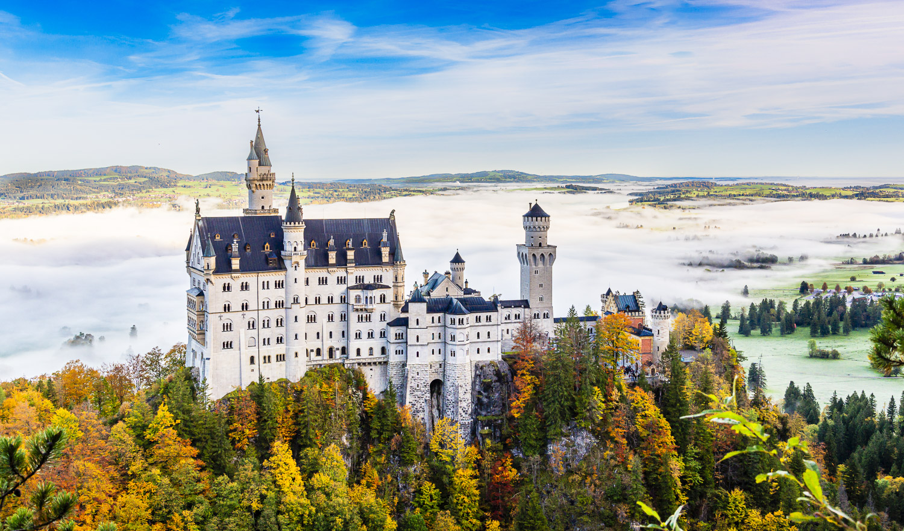

Germany
Our most recent journey to Germany was filled with excitement and adventure. After landing in Munich, we picked up our rental car and began our 18-day itinerary, which was packed with delicious food, rich culture, and, most of all, great memories. Germany certainly delivers when it comes to scenic beauty and its many diverse historical cities.

Italy
Italy never fails to impress! From the canals of Venice to the rolling hills of Tuscany, our trip through Italy was nothing short of breathtaking. The food, the people, and the history made it an unforgettable adventure.

Ireland
Ireland’s stunning landscapes and warm hospitality made our trip extra special. The Cliffs of Moher were breathtaking, and our drive along the Wild Atlantic Way gave us some of the best views in the world.